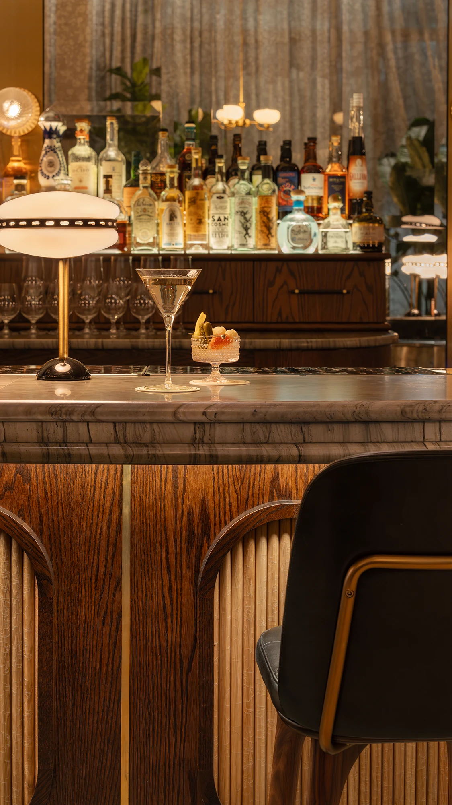
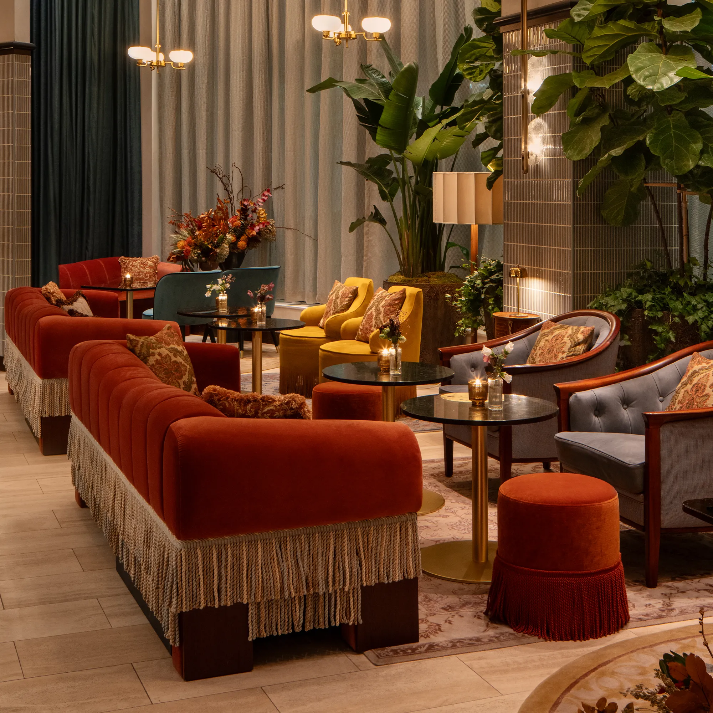

Many of La Padrona’s design features were created to recall the golden era of cinema. Take the custom tufted sofas, with cognac leather seats and warm burnt-orange velvet backs. Details such as black leather welting and double-layered fringe around their bases also exude a 1940s flair. AvroKO senior design manager Andres Lamos highlights these and more custom furniture pieces in an episode of America ByDesign Material Spotlight, in which he discusses his studio’s collaboration with Stellar Works. Others include solid red oak tables that can easily shift from a square four-top to a round six-seater thanks to hinged drop leafs with curved sides, which neatly unfold and lock into place.
The restaurant’s main dining area upstairs also includes semi-circular booths lined with cream tufted leather, which encircle marble-topped tables. A striking central bar is presided over by a decadent ceiling installation, displaying liquor bottles and encircled by double-fringe layers that echo those around the sofas. Venetian plaster walls, warm wood paneling, and spherical pendant lights all contribute to the movie-like mise en scène, in which diners can enjoy their traditional Italian cuisine while imagining that they’re extras in Fellini’s La Dolce Vita.
Guests first arrive into the lounge area, where a walnut bar is topped with a smoky-gray stone counter. Beveled antique mirror tiles cover the wall behind, reflecting light from the full-height windows along the facade. A grand staircase with a floral-patterned runner connects the restaurant’s first and second floors. This architectural gesture soars over the bar area, where a row of Neri&Hu’s Utility Bar Chair SH760 are positioned—chosen for their compact size and flexibility.
